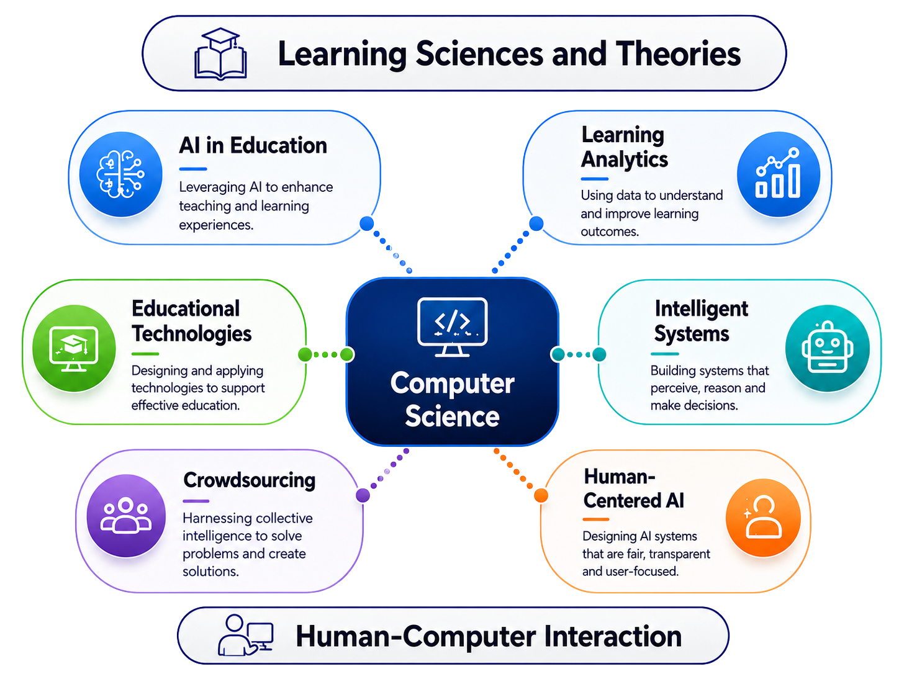

- 👤 Associate Professor Hassan Khosravi
- ✉ h.khosravi@uq.edu.au
- 📞 +61 7 334 60774
- Ph.D.: 2007–2012, Simon Fraser University
- M.Sc.: 2005–2007, Amirkabir University of Technology
- B.Sc.: 2001–2005, Shahid Bahonar University
I am currently an Associate Professor in the Institute for Teaching and Learning Innovation and an Affiliate Academic in the School of Electrical Engineering and Computer Science in the Faculty of Engineering, Architecture and Information Technology at The University of Queensland. Prior to joining the University of Queensland, I held a Lecturer position in the Department of Computer Science at The University of British Columbia. I hold a PhD from the School of Computing Science at Simon Fraser University in Canada and a Masters degree in Computer Science from the Amirkabir University of Technology, Tehran, Iran.
My research sits at the intersection of Computer Science, Learning Sciences, and Human-Computer Interaction. I draw on insights from learning sciences and theories to design and evaluate technological solutions that make education more effective, equitable, and engaging. A central theme of my work is AI in Education, leveraging artificial intelligence to personalise and enhance teaching and learning experiences at scale. This is complemented by Learning Analytics, where I use data to understand how students learn and to surface actionable insights that improve outcomes. I am deeply interested in Educational Technologies that are grounded in evidence and designed to support effective pedagogy in real-world settings. My work in Crowdsourcing explores how collective intelligence can be harnessed to solve complex educational problems and create richer learning experiences. Underpinning all of this is a commitment to Intelligent Systems that perceive, reason, and make decisions in ways that are robust and transparent, and to Human-Centered AI, ensuring that the systems we build are fair, accountable, and user-focused. Together, these strands reflect a vision of education technology that is scientifically grounded, computationally sophisticated, and deeply human.
My teaching career includes coordinating 30 different offerings with class sizes ranging from 50 to 700, in 10 distinct courses to a total of approximately 7000 students at three top-ranked institutions: Simon Fraser University (SFU) and The University of British Columbia (UBC) in Canada, and The University of Queensland (UQ) in Australia. I have taught a range of courses including introductory programming courses, data structures and algorithms, artificial intelligence, database management systems as well as graduate-level data science courses. I also lead and teach into a variety of formal and informal programs that mentor and foster the next generation of great teachers.
I hold a Senior Fellowship with the Higher Education Academy, which has been awarded in recognition of his contributions to effective approaches to teaching and learning as well as successful coordination, support, supervision, management and mentoring of others in relation to learning and teaching.